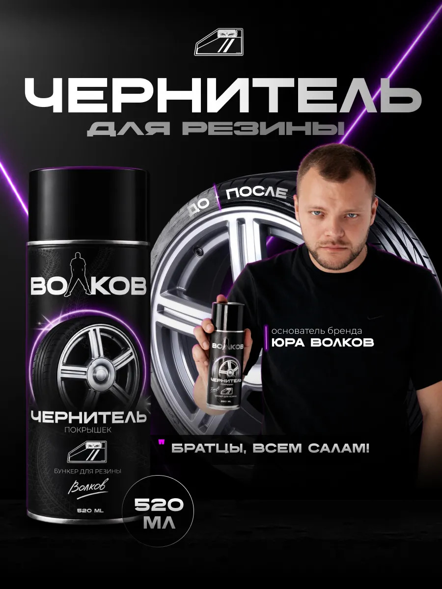

VOLKOV®PRODUCT / 001

520 ML
VOLKOV / УХОД ЗА АВТО
Чернитель шин
и резины Volkov
Глубокий чёрный цвет. Выразительный эффект мокрой резины.
Объём520 мл
- Глубокий чёрный цвет и эффект «мокрой» резины
- Защита от УФ, трещин и пересыхания
- Отталкивает пыль и грязь
- От основателя бренда — Юры Волкова
ВЫБИРАЙ СВОЮ ПЛОЩАДКУ